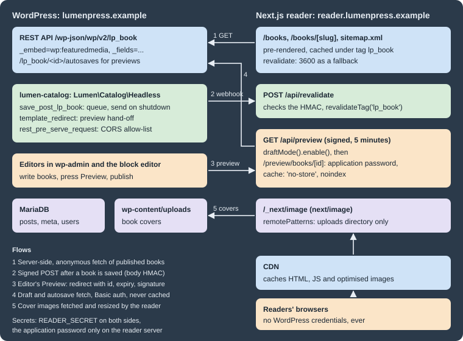

Headless WordPress
|
This content was generated with the assistance of AI and should be verified against the official documentation before being relied on in production. |
A headless (or decoupled) WordPress site keeps WordPress for editing, users, media and the content model, and
hands the rendering of public pages to a separate application that reads the content over an API. This page is for
developers and architects deciding whether to do that and building it. Lumen Press, a fictitious publisher, keeps
its WordPress site at lumenpress.example and adds a Next.js reader app at reader.lumenpress.example that shows
the lp_book catalogue of the lumen-catalog plugin. The WordPress side of the API is covered in REST API: Using It and
REST API: Extending It; Next.js itself in
Next.js.
The examples were tested on WordPress 7.1.3 (released 2026-10-06); WordPress 7.1.4, a security-only release of
2026-10-28 with no API changes, is the current release and the one to run in production. WordPress 7.2 is planned for
2026-12-08. The page also uses PHP 7.4 minimum (8.3+ recommended), WP-CLI 2.12.0, Next.js 16.4.3 (the latest release on
nextjs.org), React 19.3.1, TypeScript 6.0.3, sanitize-html 2.18.1 and Node.js 24, all checked on 2026-10-28. Every
output shown was captured with WordPress in Docker (wordpress:7.1.3-php8.4-apache, MariaDB 11.8,
WP_ENVIRONMENT_TYPE local) reachable as lumenpress.test, and the reader app built with next build and served
with next start in a node:24-slim container reachable as reader.lumenpress.test:3000 on the same Docker network.
Users are maria.editor (Editor, ID 2) and lena.catalogue (Catalogue Manager, ID 4); the standard local stack is
in Local Development Environments.
When headless makes sense
Headless is a trade: the front end gains a JavaScript framework’s freedom, and the team takes over what the theme layer did for free. It pays off when the same content feeds several front ends (web, mobile, in-store screens), when the front end is an application (heavy client state, an existing React design system, a Next.js team), when WordPress must be isolated on a private network, or when performance targets are easier with a framework’s rendering and image pipeline.
It rarely pays off for a site of pages and posts whose editors rely on front-end plugins, or with no one to own a second application: a block theme with full-page caching (Performance and Caching) is fast, and the Interactivity API adds client-side behaviour without leaving WordPress.
The costs are the same on every project:
| Area | What the front end now has to do |
|---|---|
Previews |
Authenticate, fetch drafts and unsaved autosaves, bypass every cache (Draft previews). |
Plugin and block output |
Plugins that print markup or enqueue scripts in the theme do nothing for it. Block HTML arrives in |
SEO |
Title tags, canonical URLs, robots meta, structured data and sitemaps, which core and SEO plugins produce for theme pages (Canonical URLs and sitemaps). |
Authentication |
WordPress’s login cookie belongs to its own domain; reader accounts elsewhere need OAuth, a token plugin or a backend-for-frontend, and server credentials never reach the browser (CORS and credentials). |
Forms and comments |
Form plugins post to their own handlers with their own scripts and spam checks; the front end uses the plugin’s REST endpoint or a route of its own. Comments: Categories, Tags and Comments. |
Search |
|
Cache invalidation |
Pre-rendered pages go stale on publish, so WordPress must notify the front end (On-demand revalidation). |
Architecture options
Traditional. WordPress renders every page with its theme; interactivity comes from theme scripts or Interactivity API blocks. One application, one deployment, and every plugin works.
Hybrid. WordPress still renders the pages, and selected parts become interactive or move elsewhere. The
Interactivity API covers much of what used to justify a separate front end
(server-rendered HTML hydrated by directives, shared state, client-side navigation); a separate app serves one area. Lumen Press is hybrid: the block theme lumen keeps serving
lumenpress.example (with lumen/wishlist as an interactive block), and the reader app adds a fast, app-like catalogue
on its own host.
Fully decoupled. WordPress only serves the admin and the API (often on a host the public never sees), the front end renders every page, and WordPress’s sitemaps, feeds and front-end URLs are turned off or redirected.
The figure shows the reader app and the five flows between it and WordPress that the rest of the page builds.

The REST API is core and needs no plugin: the lp_book type is registered with 'show_in_rest' => true, and its
meta with show_in_rest (Custom Post Types and Taxonomies,
Metadata and Custom Fields). GraphQL, through WPGraphQL, is the
main alternative (WPGraphQL and Faust.js).
The WordPress side: Lumen\Catalog\Headless
The plugin gains one class, Lumen\Catalog\Headless (PSR-4 autoloaded, booted from Plugin::boot() with
Headless::boot();), with a signed revalidation webhook, a preview hand-off with a short-lived signed token,
and a CORS allow-list. The reader’s address and the shared secret are configuration in wp-config.php:
// wp-config.php (above "That's all, stop editing!")
define( 'LUMEN_READER_URL', 'https://reader.lumenpress.example' );
define( 'LUMEN_READER_SECRET', getenv( 'LUMEN_READER_SECRET' ) ?: '' ); // At least 32 random bytes, hex encoded.The reader gets the same value as READER_SECRET. Generate one per environment (openssl rand -hex 32) and keep it in
the platform’s secret store. Without both constants the class registers nothing, so a restored copy of production on a
laptop never calls production’s reader.
<?php
// lumen-catalog/src/Headless.php
namespace Lumen\Catalog;
defined( 'ABSPATH' ) || exit;
/** Revalidation webhook, preview hand-off and CORS for the reader app. */
final class Headless {
/** @var array<int, true> Book IDs saved during this request. */
private static array $queued = array();
public static function boot(): void {
if ( ! defined( 'LUMEN_READER_URL' ) || ! defined( 'LUMEN_READER_SECRET' ) || '' === LUMEN_READER_SECRET ) {
return;
}
add_action( 'save_post_lp_book', array( self::class, 'queue_revalidation' ), 10, 2 );
add_action( 'shutdown', array( self::class, 'send_revalidation' ) );
add_action( 'template_redirect', array( self::class, 'redirect_preview' ) );
add_action( 'rest_api_init', array( self::class, 'replace_cors_headers' ), 15 );
}
/** Remembers a saved book; the webhook is sent once, at the end of the request. */
public static function queue_revalidation( int $post_id, \WP_Post $post ): void {
if ( wp_is_post_autosave( $post_id ) || wp_is_post_revision( $post_id ) || 'auto-draft' === $post->post_status ) {
return;
}
self::$queued[ $post_id ] = true;
}
/** Tells the reader app which books changed, signing the body with the shared secret. */
public static function send_revalidation(): void {
foreach ( array_keys( self::$queued ) as $post_id ) {
$post = get_post( $post_id );
if ( ! $post ) {
continue;
}
$body = wp_json_encode( array( 'id' => $post->ID, 'slug' => $post->post_name, 'status' => $post->post_status ) );
$headers = array(
'Content-Type' => 'application/json',
'X-Lumen-Signature' => 'sha256=' . hash_hmac( 'sha256', $body, LUMEN_READER_SECRET ),
);
$response = wp_remote_post( LUMEN_READER_URL . '/api/revalidate', array( 'timeout' => 3, 'headers' => $headers, 'body' => $body ) );
if ( is_wp_error( $response ) || 200 !== wp_remote_retrieve_response_code( $response ) ) {
// The reader still refreshes on its time-based revalidation; log and carry on.
error_log( sprintf( 'lumen-catalog: revalidation of book %d failed', $post->ID ) );
}
}
self::$queued = array();
}
/** Sends editors who preview a book to the reader app with a short-lived signed token. */
public static function redirect_preview(): void {
if ( ! is_preview() ) {
return;
}
$post = get_post();
if ( ! $post || 'lp_book' !== $post->post_type || ! current_user_can( 'edit_post', $post->ID ) ) {
return;
}
$expires = time() + 5 * MINUTE_IN_SECONDS;
$sig = hash_hmac( 'sha256', $post->ID . '|' . $expires, LUMEN_READER_SECRET );
$url = add_query_arg( array( 'id' => $post->ID, 'expires' => $expires, 'sig' => $sig ), LUMEN_READER_URL . '/api/preview' );
nocache_headers();
wp_redirect( $url ); // Not wp_safe_redirect(): the reader is another host, taken from a constant.
exit;
}
/** Swaps core's "echo any origin" CORS headers for an allow-list. */
public static function replace_cors_headers(): void {
remove_filter( 'rest_pre_serve_request', 'rest_send_cors_headers' );
add_filter( 'rest_pre_serve_request', array( self::class, 'send_cors_headers' ) );
}
/** Sends CORS headers for allowed origins only, without credentials. */
public static function send_cors_headers( $served ) {
$origin = get_http_origin();
$allowed = (array) apply_filters( 'lumen_catalog_cors_origins', array( LUMEN_READER_URL ) );
if ( $origin && in_array( $origin, $allowed, true ) ) {
header( 'Access-Control-Allow-Origin: ' . $origin );
header( 'Access-Control-Allow-Methods: OPTIONS, GET' );
}
header( 'Vary: Origin', false );
return $served;
}
}Why each hook is the one it is:
-
save_post_{post_type}(3.7+) fires only for books, for every status, so unpublishing and trashing (wp_trash_post()updates the status) also reach the reader. Revisions and autosaves have the typerevisionand do not trigger it; the checks are a guard. Permanent deletion needsbefore_delete_postas well. -
The webhook is sent on
shutdown, not insidesave_post. When the block editor saves through the REST API,save_postfires insidewp_insert_post(), before the controller writes the meta and terms of the same request, so a reader refetching at that moment could cache the old ISBN. Queuing also merges several saves of a book into one call.wp_after_insert_post(5.6) is the other hook that runs after meta and terms are saved. -
wp_remote_post(), notwp_safe_remote_post(): the destination is an administrator’s constant, and a staging reader may sit on a private address the "safe" variant rejects. The 3-second timeout bounds the delay added to a save; failures are only logged, since the reader still refreshes hourly (HTTP and Filesystem APIs). The HMAC covers the exact bytes sent.
The Lumen reader app
The reader is a Next.js App Router application that talks to WordPress only from its server, so no credential or internal address reaches the browser.
{
"name": "lumen-reader",
"version": "0.1.0",
"private": true,
"scripts": { "dev": "next dev", "build": "next build", "start": "next start" },
"dependencies": {
"next": "16.4.3", "react": "19.3.1", "react-dom": "19.3.1", "sanitize-html": "2.18.1", "server-only": "0.0.1"
},
"devDependencies": {
"@types/node": "24.19.2", "@types/react": "19.3.0", "@types/react-dom": "19.3.0",
"@types/sanitize-html": "2.16.2", "typescript": "6.0.3"
}
}Source: Next.js Docs: Installation
Configuration comes from five server-side environment variables, set in .env.local (never committed) locally and
in the platform’s secret store in production: WORDPRESS_URL (https://lumenpress.example), READER_URL
(https://reader.lumenpress.example), READER_SECRET (the same value as LUMEN_READER_SECRET), WP_PREVIEW_USER
(lena.catalogue) and WP_PREVIEW_APP_PASSWORD (an application password, see Draft previews). Without the
NEXT_PUBLIC_ prefix, Next.js never inlines them into client JavaScript
(Next.js Docs: Environment Variables).
Images: next/image and remotePatterns
next/image resizes covers on the reader’s server and fetches only what images.remotePatterns allows; allowing the
uploads directory, not the whole host, keeps the optimiser from becoming an open proxy.
// next.config.ts
import type { NextConfig } from 'next';
const wordpress = process.env.WORDPRESS_URL ?? 'https://lumenpress.example';
const nextConfig: NextConfig = {
output: 'standalone',
images: {
// Only the WordPress uploads directory may be optimised.
remotePatterns: [new URL(`${wordpress}/wp-content/uploads/**`)],
// A local .test site resolves to a private IP, which Next.js 16 refuses by default.
dangerouslyAllowLocalIP: wordpress.endsWith('.test'),
},
};
export default nextConfig;Source: Next.js Docs: Image Component
remotePatterns accepts URL objects since Next.js 15.3; since 16.0 private IP addresses need
dangerouslyAllowLocalIP (Docker or .test only, never production). Omitting protocol or pathname implies **.
The test optimiser returned 200 image/png for the cover and 400 for http://evil.example/x.png. WordPress’s own sizes (media_details.sizes)
are unused; a site that prefers them renders <img srcset> itself
(Images and Media API).

Fetching books from the REST API
One server-only module holds the data layer: published-book fetches are cached and tagged lp_book, preview fetches
are authenticated and never cached.
// lib/wordpress.ts
import 'server-only';
const API = `${process.env.WORDPRESS_URL}/wp-json/wp/v2`;
const FIELDS = [
'id', 'slug', 'link', 'status', 'modified_gmt', 'title.rendered', 'excerpt.rendered', 'content.rendered',
'meta.lp_isbn', 'meta.lp_pages', 'meta.lp_published_on', '_links.wp:featuredmedia', '_embedded',
].join(',');
const EMBED = '_embed=wp:featuredmedia';
type Html = { rendered: string };
export type Media = { source_url: string; alt_text: string; media_details: { width: number; height: number } };
export type Book = {
id: number; slug: string; link: string; status: string; modified_gmt: string;
title: Html; excerpt: Html; content: Html;
meta: { lp_isbn: string; lp_pages: number; lp_published_on: string };
_embedded?: { 'wp:featuredmedia'?: Media[] };
};
type Autosave = Pick<Book, 'modified_gmt' | 'title' | 'excerpt' | 'content'>;
async function wp<T>(path: string, init: RequestInit): Promise<T> {
const response = await fetch(`${API}${path}`, init);
if (!response.ok) throw new Error(`WordPress answered ${response.status} for ${path}`);
return (await response.json()) as T;
}
// Published books: cached, tagged for on-demand revalidation, refreshed hourly at the latest.
const published = { next: { tags: ['lp_book'], revalidate: 3600 } };
export function getBooks(): Promise<Book[]> {
return wp<Book[]>(`/lp_book?per_page=100&orderby=title&order=asc&${EMBED}&_fields=${FIELDS}`, published);
}
export async function getBook(slug: string): Promise<Book | null> {
const books = await wp<Book[]>(`/lp_book?slug=${encodeURIComponent(slug)}&${EMBED}&_fields=${FIELDS}`, published);
return books[0] ?? null;
}
// Drafts and unsaved changes: authenticated with an application password, never cached.
export async function getPreviewBook(id: number): Promise<Book | null> {
const credentials = `${process.env.WP_PREVIEW_USER}:${process.env.WP_PREVIEW_APP_PASSWORD}`;
const init: RequestInit = {
cache: 'no-store',
headers: { Authorization: `Basic ${Buffer.from(credentials).toString('base64')}` },
};
try {
const book = await wp<Book>(`/lp_book/${id}?${EMBED}&_fields=${FIELDS}`, init);
const autosaves = await wp<Autosave[]>(
`/lp_book/${id}/autosaves?_fields=modified_gmt,title.rendered,excerpt.rendered,content.rendered`, init);
const latest = autosaves.sort((a, b) => b.modified_gmt.localeCompare(a.modified_gmt))[0];
return latest && latest.modified_gmt > book.modified_gmt ? { ...book, ...latest } : book;
} catch {
return null;
}
}-
_embed=wp:featuredmediaembeds only the cover’s media object instead of every embeddable link (author, terms). -
_fieldstrims the response to what the page renders, including nested keys such asmeta.lp_isbnandtitle.rendered. Combined with_embed, it must list_embeddedand the embedded links (_links.wp:featuredmedia), or nothing is embedded (checked:_fields=id,slugreturned no_embedded). The embedded objects themselves are not trimmed. -
slug=returns an array; there is no single-item route by slug.
For "The Lighthouse Ledger" the response was (cover sizes shortened):
[{
"id": 5, "modified_gmt": "2026-10-28T19:32:08", "slug": "the-lighthouse-ledger",
"link": "http://lumenpress.test/books/the-lighthouse-ledger/",
"title": { "rendered": "The Lighthouse Ledger" },
"content": { "rendered": "\n<p class=\"wp-block-paragraph\">When the <strong>Saltmere</strong> light is automated, its last keeper leaves behind a ledger.</p>\n\n\n\n<p onclick=\"alert(1)\">Inline handler</p><script>alert(\"x\")</script>\n" },
"meta": { "lp_isbn": "978-1-23456-789-7", "lp_pages": 312, "lp_published_on": "2026-03-12" },
"_links": { "wp:featuredmedia": [{ "embeddable": true, "href": "http://lumenpress.test/wp-json/wp/v2/media/6" }] },
"_embedded": { "wp:featuredmedia": [{
"id": 6, "alt_text": "Cover of The Lighthouse Ledger",
"media_details": { "width": 600, "height": 900, "file": "2026/10/ledger-cover.png", "sizes": {} },
"source_url": "http://lumenpress.test/wp-content/uploads/2026/10/ledger-cover.png"
}] }
}]Source: REST API Handbook: Posts
The content deliberately holds a Custom HTML block with an inline handler and a <script>, saved by an
administrator. That is allowed: administrators and editors on a single site have unfiltered_html, so
content.rendered is not guaranteed to be safe. More than 100 books means looping over pages (X-WP-TotalPages,
see REST API: Using It); a smaller, stable contract is the lumen/v1/books
route of REST API: Extending It.
Rendering block HTML safely
Block HTML reaches React only through dangerouslySetInnerHTML, so it is sanitised first with an allow-list. Titles
are HTML too (with entities), so they are reduced to plain text for React to escape:
// lib/html.ts
import sanitizeHtml from 'sanitize-html';
// Block HTML from WordPress is trusted markup only for users without unfiltered_html; sanitise it anyway.
export function safeBlockHtml(html: string): string {
return sanitizeHtml(html, {
allowedTags: sanitizeHtml.defaults.allowedTags.concat(['img', 'figure', 'figcaption']),
allowedAttributes: {
'*': ['class', 'id', 'lang'],
a: ['href', 'rel', 'target'],
img: ['src', 'srcset', 'sizes', 'alt', 'width', 'height', 'loading', 'decoding'],
},
allowedSchemes: ['https', 'http', 'mailto'],
});
}
// Titles arrive as HTML (entities, possibly tags); React escapes the plain text this returns.
export function plainText(html: string): string {
return sanitizeHtml(html, { allowedTags: [], allowedAttributes: {} })
.replace(/</g, '<').replace(/>/g, '>').replace(/"/g, '"').replace(/&/g, '&');
}Source: Common APIs Handbook: Security
// components/BookView.tsx
import Image from 'next/image';
import type { Book } from '@/lib/wordpress';
import { plainText, safeBlockHtml } from '@/lib/html';
export default function BookView({ book, preview = false }: { book: Book; preview?: boolean }) {
const cover = book._embedded?.['wp:featuredmedia']?.[0];
return (
<article>
{preview && (
<form action="/api/exit-preview" method="post">
<p>Preview of a {book.status} book. <button type="submit">Exit preview</button></p>
</form>
)}
<h1>{plainText(book.title.rendered)}</h1>
{cover && (
<Image
src={cover.source_url}
alt={cover.alt_text}
width={cover.media_details.width}
height={cover.media_details.height}
sizes="(max-width: 680px) 100vw, 320px"
/>
)}
<p>ISBN {book.meta.lp_isbn} · {book.meta.lp_pages} pages</p>
<div className="entry-content" dangerouslySetInnerHTML={{ __html: safeBlockHtml(book.content.rendered) }} />
</article>
);
}Source: Next.js Docs: Image Component
On the built page the paragraph kept its class and <strong>, while the onclick attribute and the <script> element
were removed. Embeds, galleries or iframes need their tags added deliberately (iframes with allowedIframeHostnames).
A real site also rewrites links to lumenpress.example/books/... into reader routes and loads styles for the block
classes (core’s @wordpress/block-library styles or its own CSS for theme.json presets); the markup itself is explained
in Static and Dynamic Blocks.
Book pages with incremental static regeneration
The book page pre-renders every published book, renders new slugs on first request, and takes its canonical URL from
the REST link:
// app/books/[slug]/page.tsx
import type { Metadata } from 'next';
import { notFound } from 'next/navigation';
import BookView from '@/components/BookView';
import { getBook, getBooks } from '@/lib/wordpress';
import { plainText } from '@/lib/html';
type Props = { params: Promise<{ slug: string }> };
// Pre-render every published book at build time; new slugs render on first request.
export async function generateStaticParams() {
const books = await getBooks();
return books.map((book) => ({ slug: book.slug }));
}
export async function generateMetadata({ params }: Props): Promise<Metadata> {
const book = await getBook((await params).slug);
if (!book) return {};
return {
title: `${plainText(book.title.rendered)} · Lumen Press`,
description: plainText(book.excerpt.rendered).trim(),
// WordPress still publishes the catalogue, so its permalink is the canonical URL.
alternates: { canonical: book.link },
};
}
export default async function BookPage({ params }: Props) {
const book = await getBook((await params).slug);
if (!book) notFound();
return <BookView book={book} />;
}The list page, app/books/page.tsx, renders a Link to /books/<slug> for each result of getBooks().
generateMetadata and the page make the same getBook() request, which Next.js deduplicates.
next build against the test site (Next.js 16.4.3, Turbopack) listed /books and /sitemap.xml as static with a
1-hour revalidation, /books/the-glass-orchard and /books/the-lighthouse-ledger as pre-rendered from
generateStaticParams, and the API and preview routes as dynamic.
A failed fetch fails the build, safer than shipping an empty catalogue. This page uses Next.js’s default
caching model (fetch with next.tags); with cacheComponents: true the same tag is attached with cacheTag()
inside 'use cache' functions and the webhook route is unchanged. Both models are explained in
Incremental Static Regeneration and
Caching.
On-demand revalidation
With revalidate: 3600 alone, a corrected ISBN shows up to an hour late. The webhook from
Headless::send_revalidation() reaches a Route Handler that checks the signature and invalidates the lp_book tag:
// lib/signature.ts
import { createHmac, timingSafeEqual } from 'node:crypto';
const secret = process.env.READER_SECRET ?? '';
export function sign(payload: string): string {
if (secret === '') throw new Error('READER_SECRET is not set');
return createHmac('sha256', secret).update(payload).digest('hex');
}
export function safeEqual(given: string, expected: string): boolean {
const a = Buffer.from(given);
const b = Buffer.from(expected);
return a.length === b.length && timingSafeEqual(a, b);
}Source: Node.js Docs: Crypto
// app/api/revalidate/route.ts
import { revalidateTag } from 'next/cache';
import { safeEqual, sign } from '@/lib/signature';
export async function POST(request: Request) {
const body = await request.text();
const given = request.headers.get('x-lumen-signature') ?? '';
if (!safeEqual(given, `sha256=${sign(body)}`)) return Response.json({ revalidated: false }, { status: 401 });
const { id, slug, status } = JSON.parse(body) as { id: number; slug: string; status: string };
// Every cached book fetch carries the lp_book tag: lists, single pages and the sitemap.
revalidateTag('lp_book', 'max');
return Response.json({ revalidated: true, id, slug, status });
}Source: Next.js Docs: revalidateTag
The signature covers the raw body (request.text(), before parsing) and is compared in constant time. Since Next.js 16
revalidateTag() takes a second argument (the one-argument form is deprecated). With the recommended 'max'
profile the tag is marked stale: the next visitor still gets the old page while it regenerates, and later visitors the
new one; { expire: 0 } makes the next request wait for fresh data instead. One tag suits a few hundred books; a
larger catalogue adds per-book tags such as book-${id}.
Checked end to end: maria.editor changed the page count of "The Lighthouse Ledger" from 312 to 320 through the REST
API (as the block editor does). The reader page, a HIT with 312 pages before, answered x-nextjs-cache: STALE with
312 pages until the background regeneration finished (a second or so), then HIT with 320. Without the webhook it
would have stayed at 312 for up to an hour. Setting "The Glass Orchard" back to draft with wp post update 7 --post_status=draft (WP-CLI fires the same hook) gave
one stale 200 for its page, then 404, and removed it from /books. A request with a wrong X-Lumen-Signature
returned 401 with {"revalidated":false}; one signed with openssl dgst -sha256 -hmac "$READER_SECRET" over
the body returned 200 with {"revalidated":true,"id":5,...}.
Pitfalls: an untagged fetch is never invalidated; replicas need a shared cache handler (Deployment); a failing
signature usually means re-serialised JSON or a trailing newline in a secret; slow saves mean the reader is down. Genres
or authors shown by the reader need their own hooks (such as edited_lp_genre) feeding the same queue.
Draft previews
WordPress’s Preview button opens the theme, authenticated by the editor’s login cookie, which belongs to
lumenpress.example and which the reader must not accept anyway. Lumen Press splits the problem in two:
-
Who may preview is decided by WordPress.
Headless::redirect_preview()runs ontemplate_redirectonly for a logged-in user who canedit_postthe book, and redirects to the reader with the ID, an expiry five minutes ahead and an HMAC of both: the token works for one book, briefly, and carries no credential. A static?secret=in the URL, as in the basic Next.js recipe, would end up in history and logs and never expire. -
Fetching the draft is done by the reader’s server with an application password of
lena.catalogue, whose Catalogue Manager role edits books but cannot manage users, plugins or settings (a dedicated, narrower account is better on a larger team). It lives only in the reader’s secret store and is revocable on its own (Authentication and Login API). Application passwords need HTTPS unless the environment type islocal, and some proxies strip theAuthorizationheader (a 401 on the fetch).
The redirect, rather than the preview_post_link filter, is needed because the block editor builds the preview URL of
a draft from the post’s link plus preview=true, using the filtered link from the autosave response only for
published posts. Both URLs reach WordPress’s front end with is_preview() true, so one redirect covers both.
The preview Route Handler and page:
// app/api/preview/route.ts
import { draftMode } from 'next/headers';
import { redirect } from 'next/navigation';
import { safeEqual, sign } from '@/lib/signature';
export async function GET(request: Request) {
const params = new URL(request.url).searchParams;
const id = Number(params.get('id'));
const expires = Number(params.get('expires'));
const sig = params.get('sig') ?? '';
const valid = Number.isInteger(id) && id > 0 && expires > Date.now() / 1000 && safeEqual(sig, sign(`${id}|${expires}`));
if (!valid) return new Response('Invalid or expired preview link', { status: 401 });
(await draftMode()).enable();
// The target is built from the verified numeric ID, never from a URL parameter: no open redirect.
redirect(`/preview/books/${id}`);
}Source: Next.js Docs: Draft Mode
// app/preview/books/[id]/page.tsx
import type { Metadata } from 'next';
import { draftMode } from 'next/headers';
import { notFound } from 'next/navigation';
import BookView from '@/components/BookView';
import { getPreviewBook } from '@/lib/wordpress';
export const metadata: Metadata = { robots: { index: false, follow: false } };
export default async function PreviewPage({ params }: { params: Promise<{ id: string }> }) {
const { isEnabled } = await draftMode();
const id = Number((await params).id);
if (!isEnabled || !Number.isInteger(id)) notFound();
const book = await getPreviewBook(id);
if (!book) notFound();
return <BookView book={book} preview />;
}Source: Next.js Docs: Draft Mode
draftMode() is asynchronous since Next.js 15. enable() sets the __prerender_bypass cookie (a new value per
next build), and requests carrying it skip the static cache; the cookie is Secure and SameSite=None, so browsers
keep it only over HTTPS. The "Exit preview" form posts to app/api/exit-preview/route.ts, whose POST handler calls
(await draftMode()).disable() and answers 303 to /books. Previews use their own route by ID, because a draft
may have no slug yet and must never be cached under a public URL. getPreviewBook() also reads
/wp/v2/lp_book/<id>/autosaves (present because lp_book supports revisions) and shows the newest autosave when it
is newer than the book; autosaves hold title, content and excerpt, so meta changes appear once saved.
On the test site, previewing the draft "The Quiet Lighthouse" (ID 8) as lena.catalogue gave 302 to
/api/preview?id=8&expires=1793216408&sig=6be3b79a..., then 307 to /preview/books/8 with
Set-Cookie: __prerender_bypass=<value>; Path=/; Secure; HttpOnly; SameSite=none, then 200 with the draft text and
<meta name="robots" content="noindex, nofollow">. Without the cookie the page was 404; the same signature with
id=5 was 401; the WordPress preview URL without a login was 404. An autosave by maria.editor on the published
"The Lighthouse Ledger" (title "The Lighthouse Ledger (revised)") appeared in the preview while the public page kept
the published title, and did not call the webhook, since save_post_lp_book does not fire for revisions.
CORS and credentials
Server-to-server requests are not subject to CORS, so the reader’s own fetches never need it. CORS matters only when
JavaScript on reader.lumenpress.example calls lumenpress.example directly, for example a search box querying
/wp/v2/lp_book?search= as the reader types.
By default WordPress echoes any request’s Origin in Access-Control-Allow-Origin with
Access-Control-Allow-Credentials: true (rest_send_cors_headers(), attached to rest_pre_serve_request by
rest_api_default_filters() on rest_api_init). Cookie authentication stays safe because a request without the
wp_rest nonce is anonymous, but a public catalogue needs less. Headless::replace_cors_headers() removes core’s
callback at priority 15, after core added it, and allows only the origins of the lumen_catalog_cors_origins filter
(the reader by default), read-only and without credentials. On the test site the reader’s origin received
Access-Control-Allow-Origin: http://reader.lumenpress.test:3000 and Access-Control-Allow-Methods: OPTIONS, GET (also
on an OPTIONS preflight, status 200), while Origin: https://evil.example received no Allow-Origin, so browsers
block the read. Both kept core’s Access-Control-Expose-Headers: X-WP-Total, X-WP-TotalPages, Link and
Access-Control-Allow-Headers (filters rest_exposed_cors_headers, rest_allowed_cors_headers) and Vary: Origin,
which stops a CDN from serving one origin’s headers to another. CORS is a browser rule, not access control: private
data is protected by permission callbacks (CORS).
Credentials follow one rule: browser code never holds a WordPress credential. Application passwords and the
revalidation secret stay on the reader’s server. Reader accounts need the user’s own identity, which a cookie on
lumenpress.example cannot give another site: use an OAuth or OpenID Connect provider shared by both (WordPress needs a
plugin, see OAuth for Browser-Based Apps), a token plugin, or keep
signed-in features on WordPress, as Lumen Press does with lumen/wishlist.
Canonical URLs and sitemaps
Two hosts showing the same book is duplicate content unless one is canonical. While WordPress still publishes
lumenpress.example/books/<slug>/, the reader sets alternates.canonical to the REST link, rendered on the test site
as <link rel="canonical" href="http://lumenpress.test/books/the-lighthouse-ledger/"/>, and WordPress’s canonical tags
and sitemaps keep working (SEO, Analytics and Privacy). Fully
decoupled, the direction flips: the canonical points to the reader, which publishes the sitemap from the same tagged
fetch, so the webhook refreshes it too:
// app/sitemap.ts
import type { MetadataRoute } from 'next';
import { getBooks } from '@/lib/wordpress';
// Used once the reader app, not WordPress, is the canonical home of the catalogue.
export default async function sitemap(): Promise<MetadataRoute.Sitemap> {
const books = await getBooks();
return books.map((book) => ({
url: `${process.env.READER_URL}/books/${book.slug}`,
lastModified: `${book.modified_gmt}Z`,
}));
}Source: Next.js Docs: sitemap.xml
The test build produced <loc>http://reader.lumenpress.test:3000/books/the-lighthouse-ledger</loc>; with
<lastmod>2026-10-28T19:32:08Z</lastmod> (modified_gmt has no zone, hence the Z). WordPress then stops advertising
its front end: add_filter( 'wp_sitemaps_enabled', '__return_false' ); turns core’s sitemaps off, "Discourage search
engines" or an X-Robots-Tag: noindex header keeps the CMS host out of results, and old URLs redirect permanently to
the reader, which also renders the Book JSON-LD.
Deployment
The reader has its own pipeline (Deployment & Self-Hosting). Points specific to a WordPress back end:
-
Build order.
next buildreads WordPress, so the build needs network access to it; deploy API changes (new meta, renamed fields) to WordPress before the reader that uses them. -
Standalone output.
output: 'standalone'gives a minimal server for a non-root container image that receives the five variables at run time; WordPress runs as in Containers, Docker and Kubernetes. -
Cache per instance.
next startkeeps its ISR cache in memory and on disk, so with several replicas a webhook reaching one leaves the others stale. A sharedcacheHandler(the Next.js docs show a Redis one) makes onerevalidateTag()reach every instance. -
CDN. Book pages carry
Cache-Control: s-maxage=3600, stale-while-revalidate=31532400(observed); a CDN honourings-maxagekeeps them up to an hour, so purge it from the same webhook or cache only assets and images there. -
Network. With
WP_HTTP_BLOCK_EXTERNAL, add the reader host toWP_ACCESSIBLE_HOSTS. -
Secrets. Rotate
LUMEN_READER_SECRETandREADER_SECRETtogether (accept both values during the overlap); revoke the application password when someone with access leaves. Staging uses its own secret and password, so a staging save never revalidates production (Deployment and CI/CD). -
Monitoring. Watch the
lumen-catalog: revalidation of book ... failedlog lines and 401s on/api/revalidateand on the preview fetch.
Source: Next.js Docs: Self-Hosting
WPGraphQL and Faust.js
The two best-known alternatives to the core REST API are ecosystem projects with their own release cycles.
WPGraphQL (plugin wp-graphql 2.25.0 on 2026-10-28; its WordPress.org listing describes it as becoming a canonical
plugin, supported by Automattic) adds a GraphQL schema at /graphql, so a client fetches exactly the fields and
relations it needs (a book, its cover, genres and the author’s other books) in one request. Post types, taxonomies and
meta must be exposed with show_in_graphql, and HTTP caching takes more work than for REST GET URLs. Faust.js (WP
Engine; @faustwp/core and @faustwp/cli 4.1.0, companion plugin faustwp 1.9.1) is a Next.js toolkit on top of
WPGraphQL that provides what this page builds by hand: authentication, previews, a front-end template hierarchy, and
blocks mapped to React components through WPGraphQL Content Blocks.
| Core REST API (this page) | WPGraphQL | Faust.js | |
|---|---|---|---|
Maintained by |
WordPress core |
Community plugin |
WP Engine |
Extra plugins on WordPress |
None |
|
|
Previews and auth |
Built here (signed redirect, application password) |
Up to the front end |
Provided |
Block content |
|
HTML or blocks as data (extension) |
Blocks mapped to components |
Caching |
Plain |
Often |
As WPGraphQL |
Best fit |
Small, stable contracts; any front end |
Rich, relational queries |
Next.js teams wanting conventions |
Where older books are outdated
WordPress All-in-One For Dummies and Pro WordPress do not cover REST development, and Ultimate WordPress
Handbook covers REST basics only, so the headless-specific points here (unfiltered content.rendered, core’s
permissive CORS headers, previews, cache invalidation) complement rather than correct them. Older tutorials also
predate application passwords (5.6), asynchronous draftMode() (Next.js 15), the required profile argument of
revalidateTag() and the optimiser’s private-address check (both Next.js 16).